Ogni contributo verifica fonti primarie e indica cosa cambia per il destinatario. Mai marketing, mai pareri travestiti.
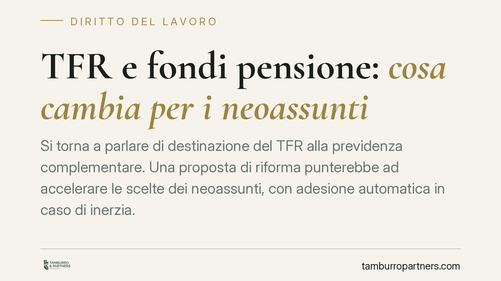
Si torna a parlare di destinazione del TFR alla previdenza complementare. Una proposta di riforma punterebbe ad accelerare le scelte dei neoassunti, con adesione automatica in caso…
Chi paga un debito di cui è solo in parte responsabile dispone di due strumenti per recuperare quanto versato: il regresso e la surrogazione legale. La Cassazione torna a delimitar…
Un condomino che annette stabilmente il pianerottolo al proprio appartamento sottrae agli altri il godimento di un bene comune. La Corte d'appello di Caltanissetta torna sul confin…
Un muro perimetrale resta bene comune anche quando delimita un'area di proprietà esclusiva. Lo conferma la giurisprudenza di legittimità in materia condominiale: la sua manutenzion…
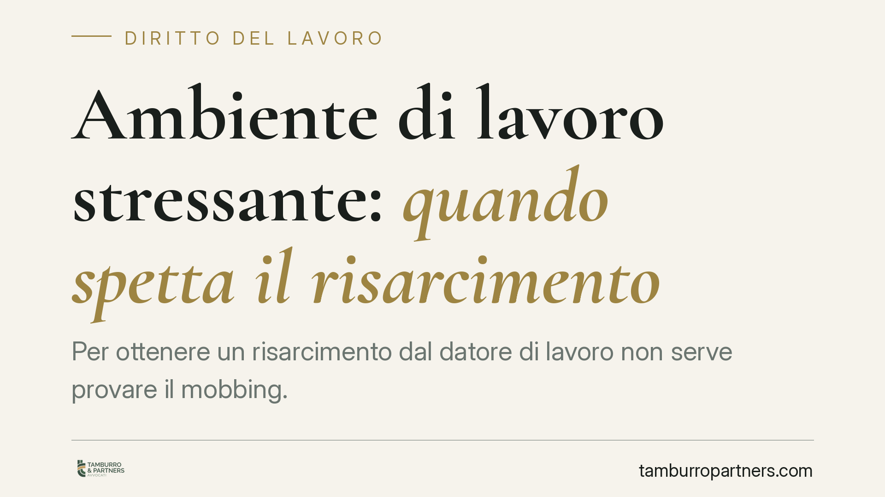
Per ottenere un risarcimento dal datore di lavoro non serve provare il mobbing. La Cassazione conferma che un clima lavorativo nocivo, se danneggia la salute psicofisica del dipend…
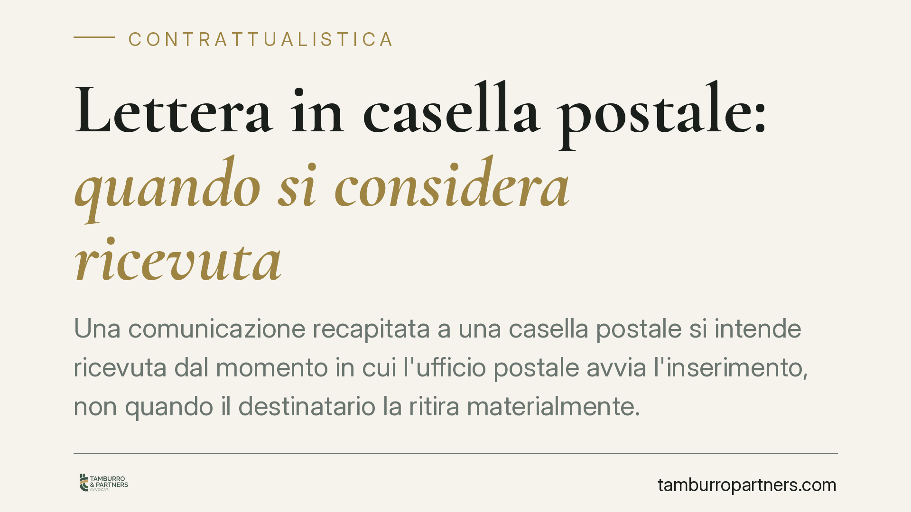
Una comunicazione contrattuale spedita a una casella postale produce effetti dal momento del materiale ritiro o già dall'arrivo all'ufficio postale? La distinzione non è teorica: i…
I proprietari di locali commerciali al piano terra spesso ritengono di non dover contribuire alle spese dell'ascensore, perché non lo usano. La Cassazione conferma il contrario: il…
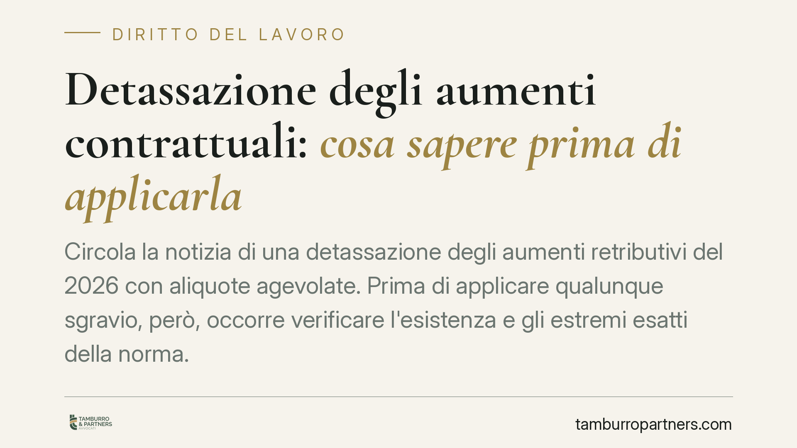
Circola la notizia di una detassazione degli aumenti retributivi del 2026 con aliquote agevolate. Prima di applicare qualunque sgravio, però, occorre verificare l'esistenza e gli e…
Il Parlamento ha convertito in legge il decreto in materia di salario giusto, incentivi all'occupazione e contrasto al caporalato anche nelle sue forme digitali. Il provvedimento t…
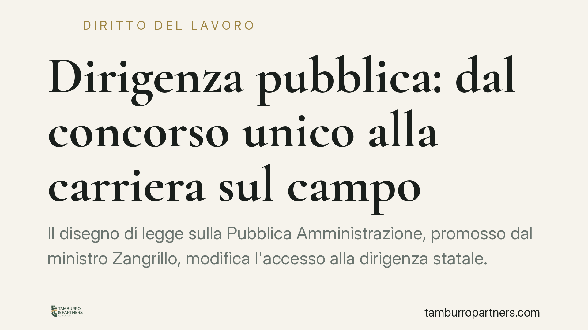
Il disegno di legge sulla Pubblica Amministrazione, promosso dal ministro Zangrillo, modifica l'accesso alla dirigenza statale. Tramonta il concorso unico nazionale a favore di un …
Un host ha pubblicato su una nota piattaforma un annuncio che escludeva i sostenitori di Israele, ottenendo la rimozione dell'inserzione. Il caso illustra un nodo concreto della co…
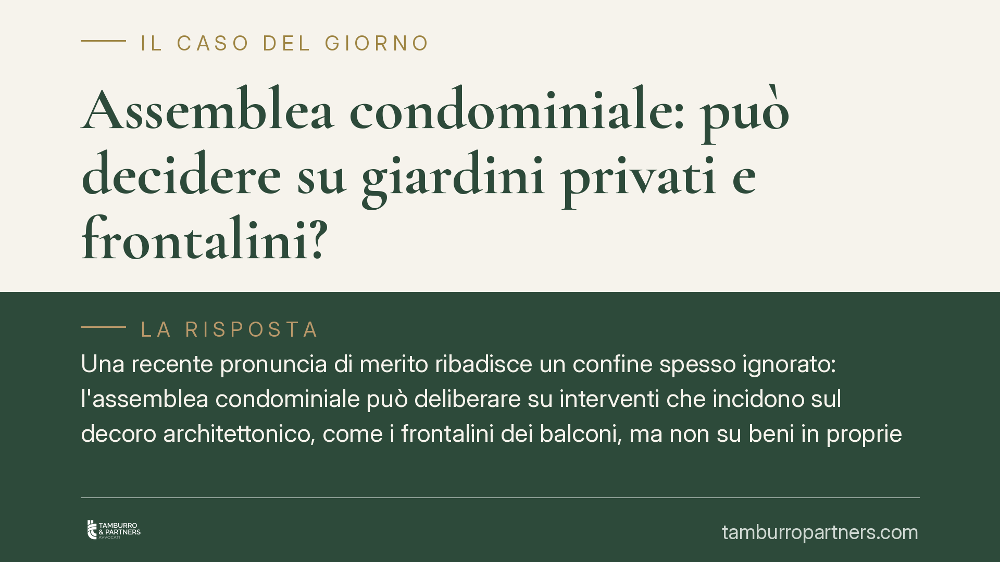
Una recente pronuncia di merito ribadisce un confine spesso ignorato: l'assemblea condominiale può deliberare su interventi che incidono sul decoro architettonico, come i frontalin…
Quando un contratto di locazione finisce, il proprietario ha l'onere di comunicare la variazione all'amministratore di condominio entro sessanta giorni, in forma scritta. Serve a t…
Chi compra un appartamento eredita anche i divieti scritti nel regolamento condominiale? Non sempre. La Corte di Cassazione, con la sentenza 16894 del 2025, ribadisce un principio …
Il Garante privacy chiarisce che l'amministratore di condominio deve documentare ogni trattamento dei dati personali dei condòmini e rispondere in modo puntuale alle richieste di a…
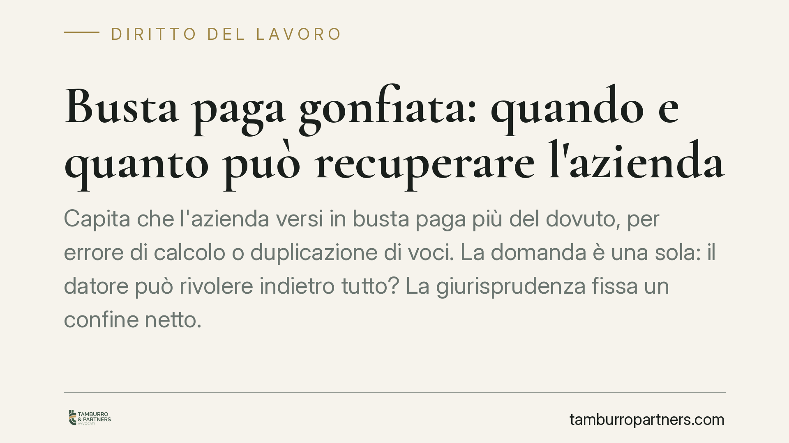
Capita che l'azienda versi in busta paga più del dovuto, per errore di calcolo o duplicazione di voci. La domanda è una sola: il datore può rivolere indietro tutto? La giurispruden…
Chi firma una quietanza dichiara di aver ricevuto il pagamento. Ma quel documento può essere smentito in tribunale? La Cassazione ha fissato un principio rigoroso: la quietanza val…
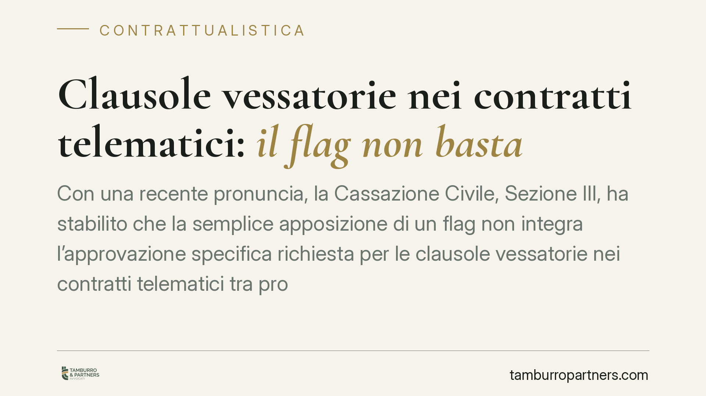
Con una recente pronuncia, la Cassazione Civile, Sezione III, ha stabilito che la semplice apposizione di un flag non integra l'approvazione specifica richiesta per le clausole ves…
La Corte d'Appello di Bologna ha affermato un principio rilevante in materia di mutui: se il contratto contiene una clausola che supera la soglia d'usura, gli interessi vengono azz…
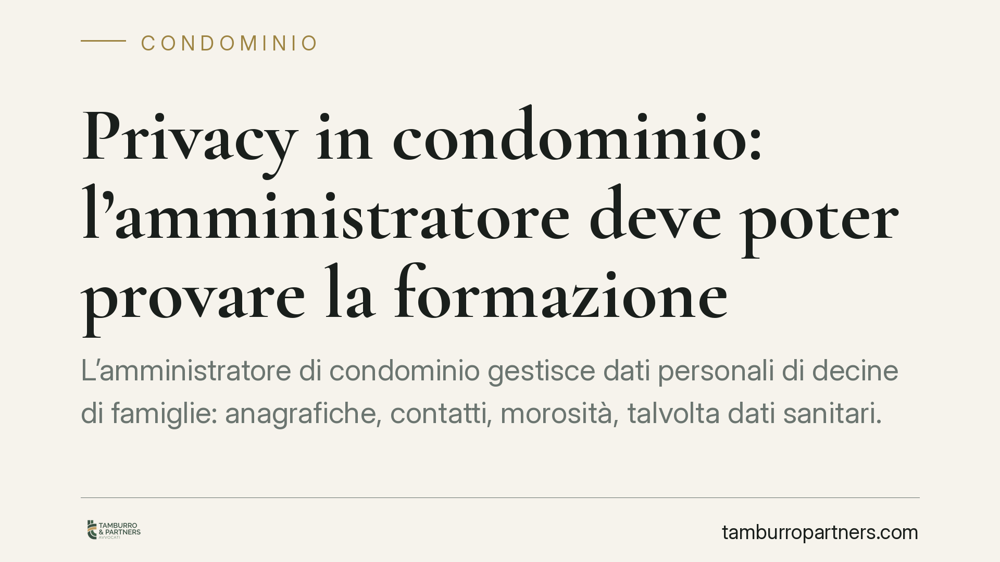
L'amministratore di condominio gestisce dati personali di decine di famiglie: anagrafiche, contatti, morosità, talvolta dati sanitari. In quanto titolare del trattamento, deve adot…
A fine giugno il B-Side Festival, promosso con Legacoopsociali, dedica due giornate al lavoro e all'integrazione attraverso il ruolo delle cooperative sociali. L'iniziativa è occas…
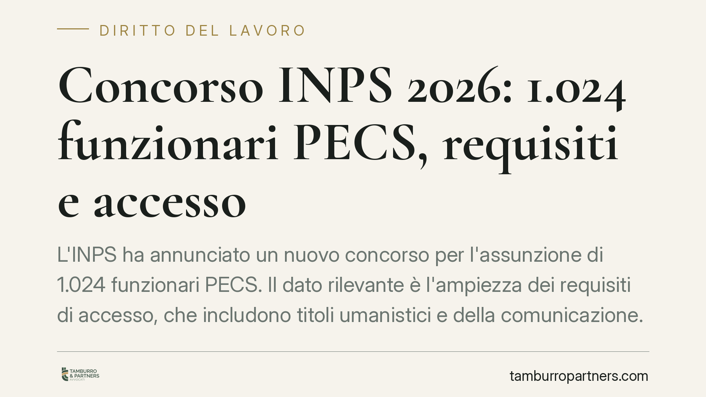
L'INPS ha annunciato un concorso per 1.024 funzionari PECS, con requisiti di accesso ampi che includono lauree umanistiche e in scienze della comunicazione. Si tratta di una proced…
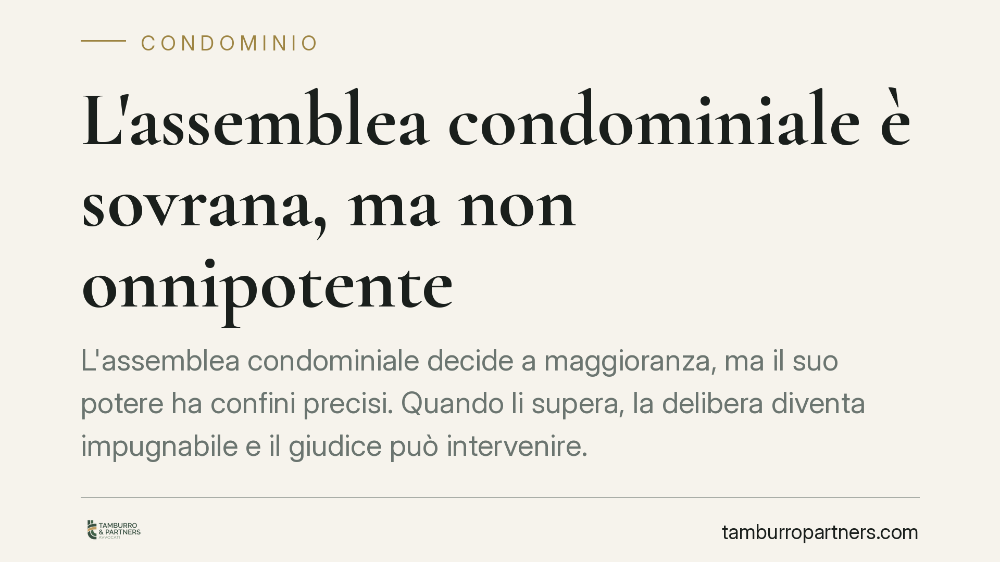
L'assemblea condominiale decide a maggioranza, ma il suo potere ha confini precisi. Quando li supera, la delibera diventa impugnabile e il giudice può intervenire. Recenti orientam…
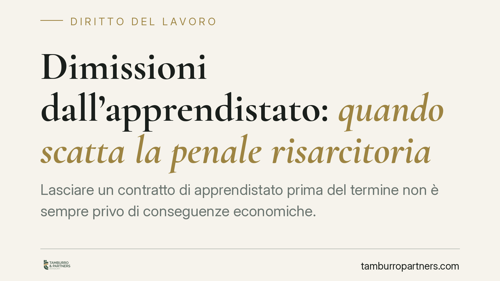
Lasciare un contratto di apprendistato prima del termine non è sempre privo di conseguenze economiche. Se il contratto contiene una clausola penale collegata alla formazione ricevu…
Un disegno di legge sulla pubblica amministrazione torna a discutere il reclutamento della dirigenza, ipotizzando un peso maggiore delle valutazioni interne rispetto al concorso. I…
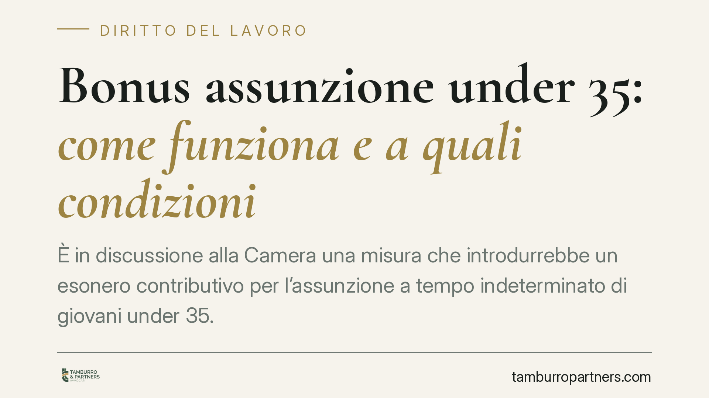
È in discussione alla Camera una misura che introdurrebbe un esonero contributivo per l'assunzione a tempo indeterminato di giovani under 35. Il testo non è definitivo e va verific…
Un fornitore incassa con ritardo rispetto al contratto, l'impresa cliente fallisce e il curatore chiede la restituzione delle somme. È un rischio concreto. La giurisprudenza di leg…
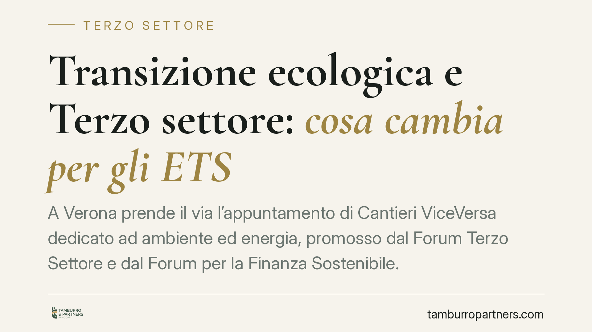
A Verona prende il via l'appuntamento di Cantieri ViceVersa dedicato ad ambiente ed energia, promosso dal Forum Terzo Settore e dal Forum per la Finanza Sostenibile. Il tema, oltre…
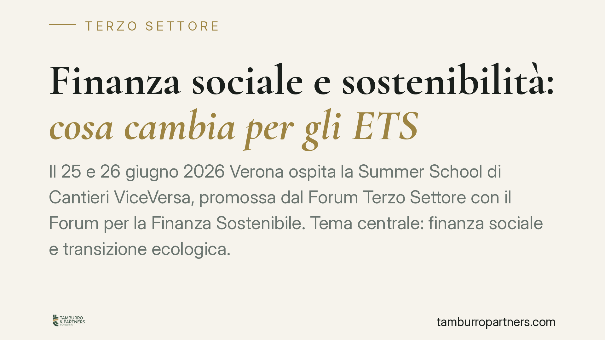
Il 25 e 26 giugno 2026 Verona ospita la Summer School di Cantieri ViceVersa, promossa dal Forum Terzo Settore con il Forum per la Finanza Sostenibile. Tema centrale: finanza social…
Premiare chi ha conseguito la laurea da poco con un punteggio maggiorato è un criterio sempre più presente nei bandi pubblici. L'obiettivo dichiarato è il ricambio generazionale. M…